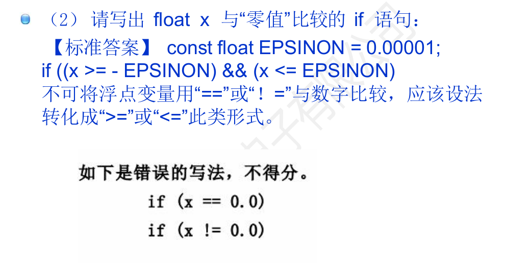

（一）分支结构
if / else if / else：注意"悬空 else"——else与最近的未配对if结合，缩进骗不了编译器。switch：case后必须是整型常量表达式；漏写break会贯穿执行到下一个case，这是最经典的错误之一；default建议保留。- 但贯穿不总是 bug：有意省略
break，让多个case共享同一段处理，是合法且常用的写法。典型例子是"某日是本年第几天"—— 从 12 月往下贯穿累加，遇到目标月份就停，比一串if-else干净得多。
switch (grade) {
case 'A': printf("优秀"); break; /* 必须 break */
case 'B': printf("良好"); break;
default: printf("未知"); break;
}（二）循环结构
| 结构 | 特点 | 适用场景 |
|---|---|---|
for | 初始化、条件、步进集中在一处 | 次数已知的循环 |
while | 先判断后执行 | 次数未知、依赖条件的循环 |
do...while | 先执行后判断，至少执行一次 | 至少要做一次的操作 |
for 的三个表达式均可省略（for (;;) 为死循环），但循环体内的变量更新别漏，否则死循环。
（三）跳转语句
break：跳出最近一层循环或switch。continue：跳过本次，进入下一次判断。goto：只建议用于"多层循环统一跳出"或"函数内统一错误清理"；滥用会破坏结构化。
（四）浮点比较
浮点数不能用 == 判断相等，应比较差的绝对值：
#include <math.h>
if (fabs(a - b) < 1e-9) { /* 视为相等 */ }原因：0.1 + 0.2 != 0.3，二进制无法精确表示多数十进制小数。
与"零值"比较是笔试题的高频点。判等要写成"落在误差区间内"，而不是问"是不是正好等于 0"：
#define EPSILON 0.00001
if ((x >= -EPSILON) && (x <= EPSILON)) { /* 视为 0 */ }
注意 if (x == 0.0) 和 if (x != 0.0) 这两种写法在要求严格的场合作答里是不给分的，因为浮点误差会让本该"等于 0"的值变成 1e-17。
（五）排序算法速记
背代码不是目标，记住"骨架 + 差异点"才不容易忘。六种排序的记忆锚点如下，写不出来时按锚点反推：
| 算法 | 记忆锚点 | 差异点 |
|---|---|---|
| 冒泡 | 双重 for + 相邻交换 | 条件 a[j] > a[j+1] 一趟把极值顶到末尾 |
| 选择 | 双重 for + 找最小下标 + 最后才交换 | 交换次数最少，只换 n-1 次 |
| 插入 | 从 i = 1 开始 + while 后移腾位 + a[j+1] = key | 近乎有序时最快，稳定性好 |
| 快排 | 双指针（哨兵）+ while 交替填坑 + 递归 | 分治，平均 O(n log n)，最坏 O(n²) |
| 归并 | 递归拆 + 双指针合并到临时数组 | 需要 O(n) 额外空间，稳定 |
| 堆排 | 建堆 + 反复取堆顶 + 向下调整 | 原地排序，不稳定 |
共同骨架只有三句：外层控制趟数、内层做比较与移动、每趟结束缩小有序区。把这三句记住，剩下的只是"比较什么、往哪移动"的区别。